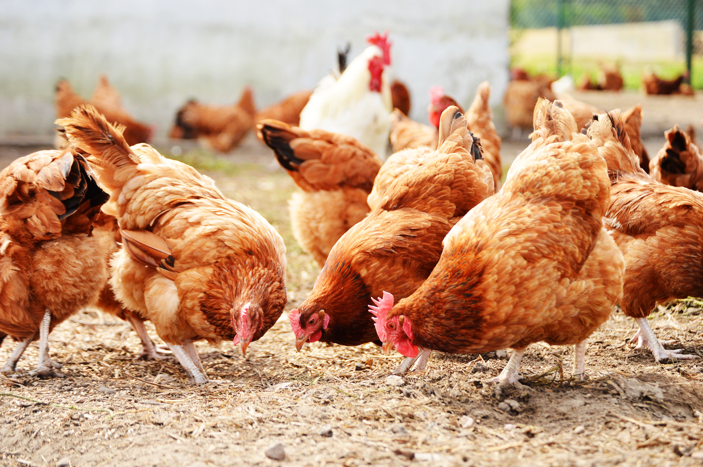

Healthcare for Livestock
Proper healthcare practices are essential for ensuring the health and productivity of various types of livestock. The healthcare needs of animals such as cattle, sheep, goats, pigs, poultry, and horses vary, and farmers need to adopt specific measures to meet these needs.
This page provides an overview of the common healthcare practices for different livestock, from disease prevention and nutrition to reproductive health and veterinary care.
Cattle (Beef and Dairy)
- Diseases: Brucellosis, Foot-and-Mouth Disease, Bovine Tuberculosis.
- Parasite Control: Deworming and pest management for internal and external parasites.
- Nutrition: High-fiber, protein-rich diet with added calcium for dairy cows.
- Reproductive Health: Timely breeding and monitoring for mastitis in dairy cows.
Sheep and Goats
- Diseases: Foot Rot, Blue Tongue, Scrapie.
- Parasite Control: Deworming for barber pole worm and external parasites like lice.
- Nutrition: High-fiber diet with supplemental grains during lambing or kidding.
- Vaccination: Vaccines for clostridial diseases like tetanus.
Pigs
- Diseases: African Swine Fever, Swine Flu, PRRS (Porcine Reproductive and Respiratory Syndrome).
- Parasite Control: Deworming for roundworms and tapeworms.
- Nutrition: High-protein, energy-rich diet to support growth and fertility.
- Reproductive Health: Monitoring for uterine infections and ensuring fertility.
Poultry (Chickens, Turkeys, Ducks)
- Diseases: Avian Influenza, Newcastle Disease, Marek’s Disease.
- Parasite Control: Monitoring and treating external parasites like mites, lice, and ticks.
- Nutrition: Balanced diet with calcium for laying hens and growth feed for broilers.
- Water Management: Clean water to prevent digestive and disease issues.
Horses
- Diseases: Equine Influenza, Strangles, Colic.
- Parasite Control: Deworming for intestinal parasites like strongyles.
- Nutrition: Balanced hay, grass, and grain diet with access to fresh water.
- Exercise & Hoof Care: Regular exercise and hoof trimming for health and performance.
Other Livestock (Buffalo, Camel, Llamas)
- Diseases: Foot-and-Mouth Disease (Buffalo), Trypanosomiasis (Camels).
- Parasite Control: Internal and external parasite management specific to each species.
- Nutrition: Species-specific feeding programs, especially for animals in arid climates like camels.
- Reproductive Health: Breeding programs and care for young animals.
Cow Healthcare

1. Common Diseases in Cows
- Foot-and-Mouth Disease: A contagious viral disease causing fever, sores, and blisters. Prevention through vaccination is critical.
- Mastitis: An infection of the udder causing swelling and reduced milk production. Regular hygiene and timely antibiotic treatment are essential.
- Brucellosis: A bacterial infection that can cause abortion in cows. Prevent through vaccination and controlling animal movement.
- Bovine Tuberculosis: Affects the respiratory system causing coughing and weight loss. Regular testing and early diagnosis are important.
- Bovine Respiratory Disease (BRD): Caused by a combination of viral and bacterial infections, especially in calves. Prevention includes good ventilation and vaccination.
2. Health Management Practices for Cows
- Vaccination: Vaccination programs for diseases like foot-and-mouth disease, clostridial diseases (tetanus, blackleg), and brucellosis.
- Parasite Control: Regular deworming and pest control measures to manage internal and external parasites like ticks and flies.
- Nutrition: Providing a balanced diet with high-quality forage (grass, hay) and supplemented grains to support milk production and overall health.
- Hoof Care: Regular hoof trimming to prevent hoof rot and lameness, which can severely impact cow mobility and health.
- Reproductive Health: Monitoring estrus and following good breeding practices to maintain herd health and ensure healthy calves.
3. General Care and Monitoring
- Hydration: Ensure fresh, clean water is always available, especially for dairy cows that need large amounts of water for milk production.
- Health Monitoring: Regularly monitor cows for signs of illness, such as changes in appetite, behavior, or temperature. Early detection is key to preventing larger outbreaks or complications.